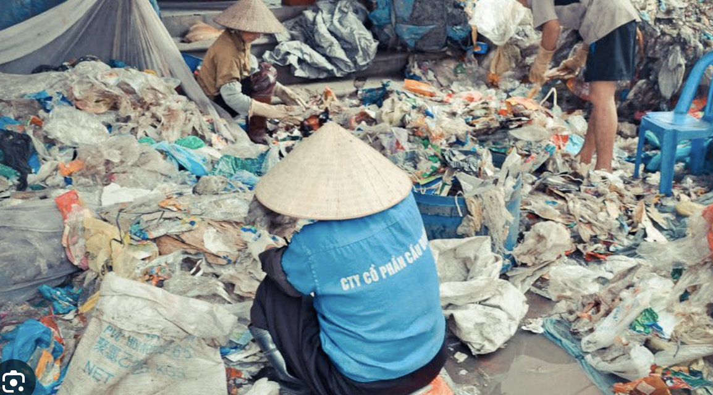
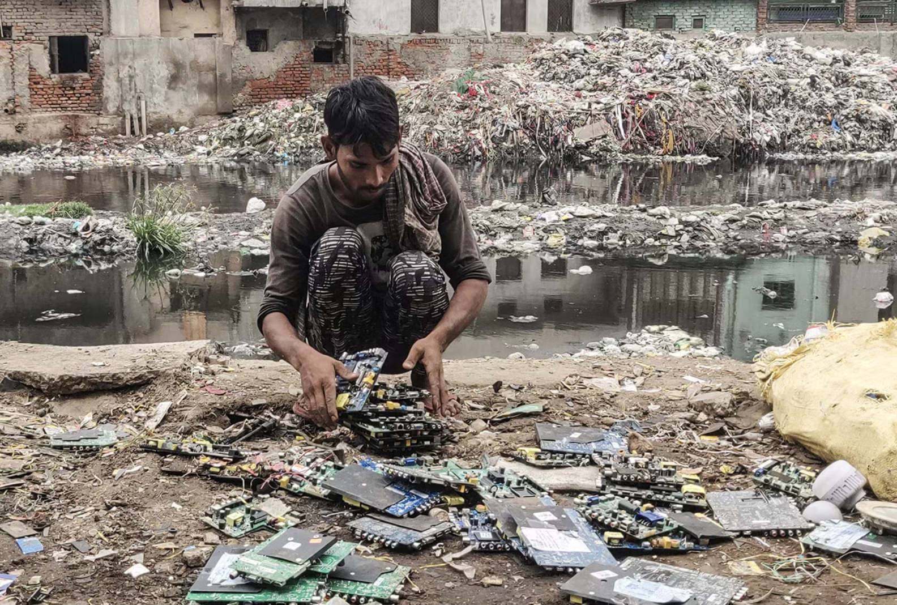
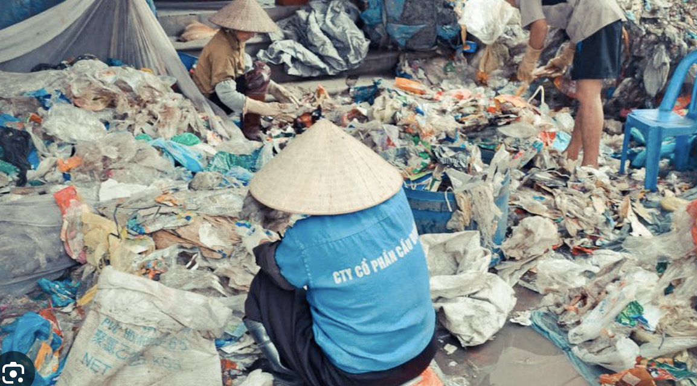
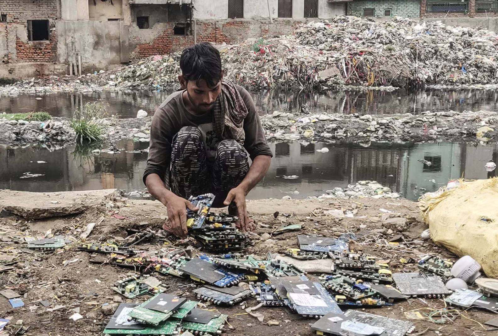
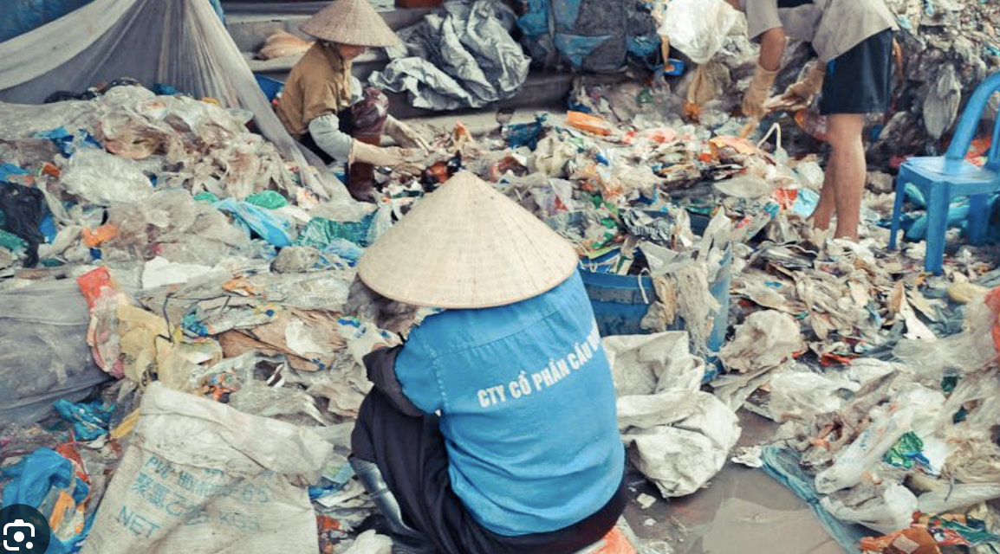
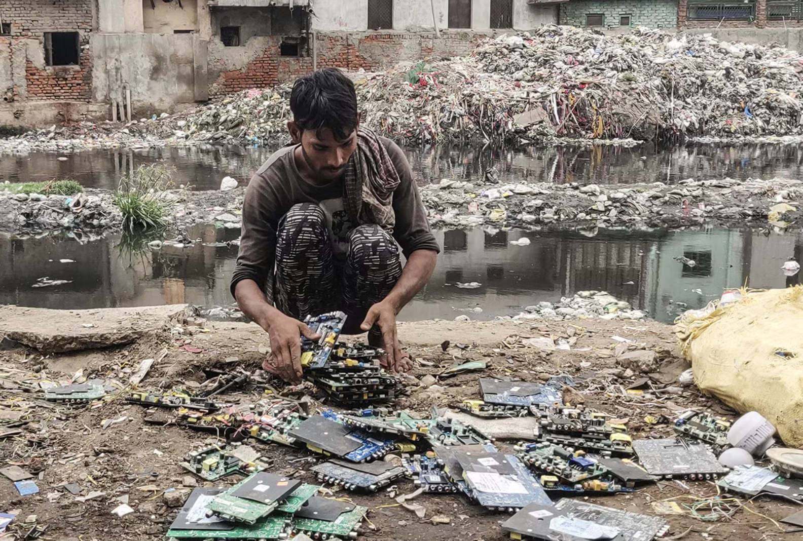

This project provides a visual representation of how excessive e-waste affects people of the world
Many of us are impactors. We Buy. We Use. And We Throw Way.
But our actions impact the rest of the world. Our Health. And Our Future. Consider The Impacted


Most E waste is dumped in landfills but some are recycled. Worker of recycling facilities are in dangerous conditions. Using your electronics for longer can make a difference
In this project, explore how the E waste recycling industry is harmful to the world. New laws are often ignored by corrupted leadership, but our actions can make a change. See how keeping your phone for just 1 extra year can make a big difference
What if __ Countries Kept their Phones for __ Years? select year first

 


